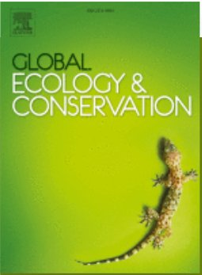
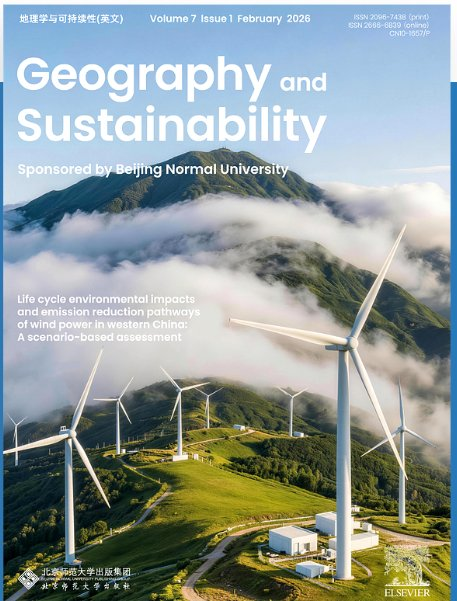
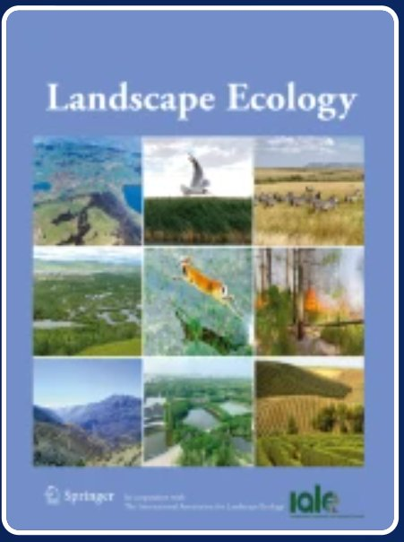

Since the Anthropocene, global natural ecosystems have suffered more severe and accelerating harm than at any other period in history. The growing conflict between urban expansion and ecological conservation highlights the importance of finding a balance. Ecological security pattern (ESP) focuses on minimizing the cost-benefit ratio of ecological conservation while maintaining a minimum level of land use demand. It is an effective spatial tool for balancing urban sprawl and ecological conservation, sustaining regional ecological security and safeguarding human well-being, and thus fostering sustainable development. However, when identifying ESP, it is still unclear whether core areas of specific or comprehensive ecosystem characteristics should be highlighted. In this study we established three ESP construction scenarios to explore the trade-off between the conservations of comprehensive and specific ecosystem characteristics. Scenario 1 and Scenario 3 respectively tended to prioritize the conservation of comprehensive and specific ecosystem characteristics respectively, while Scenario 2 represented an intermediate approach. Furthermore, conservation effectiveness of the three scenarios were assessed to choose the best solution under the objectives of ecosystem health, landscape connectivity and integrated conservation. The results showed that Scenario 3 had the largest number of ecological sources and ecological corridors, being 5.82 times and 7.48 times of that in Scenario 1, respectively. The total area of ecological sources in each scenario was 1626 km², accounting for 24% of the study area. Besides, Scenario 3 had the largest area of ecological corridors, with a total area of 705 km². Natural reserves of Helan Mountain, Sha Lake, and Baijitan were identified as ecological sources in all the three scenarios, emphasizing their conservation importance. The ESP identified in Scenario 1 exhibited better representativeness of ecosystem health, while the ESP identified in Scenario 3 demonstrated the highest level of landscape connectivity and integrated conservation. Scenario 2 was not the optimal solution under all conservation objectives. The results suggested that the scenario for the conservation of specific ecosystem characteristic had better conservation benefits. This study highlights the conservation trade-off between comprehensive and specific ecosystem characteristics, which will help to identify optimal ESP construction solution.

Implementing large-scale ecological restoration of territorial space is a key strategy for China to halt ecosystem degradation and promote ecological civilization. As a reference benchmark and target guide for ecological restoration, the reference of ecological restoration is a necessary basis for the smooth implementation of ecological restoration projects. However, there is little research focusing on the ecological restoration reference of terrestrial space. Aiming to know what is ecological restoration reference, what are its characteristics, and how to identify it, in this study we discussed the definition, the identification approach framework, and the directions of future research of ecological restoration reference of territorial space. This study suggested that the reference of ecological restoration of territorial space had three basic characteristics: comprehensiveness of indicators, two-dimensionality of space and time, and dynamic adaptability. The identification framework of ecological restoration reference of territorial space includes three major steps: comprehensive ecosystem assessment, reference ecosystem selection, and reference identification under integrated spatial and temporal dimensions. With the focus on the key issues of Nature-based Solutions, integrated protection and restoration of mountains, water, forests, lakes, grasses and sands, and social-ecological system sustainability, we highlighted that ecological restoration reference identification should place great emphasis on systemic thinking, take sustainability as the core orientation for the selection of reference indicators, and pay attention to the social-ecological system integrated perspective, so as to identify ecological restoration reference based on the social-ecological process and oriented to the comprehensive enhancement of social-ecological system sustainability. This study clearly defined the conceptual connotation and identification framework of ecological restoration reference in terrestrial space, and provided theoretical and methodological support for the orderly promotion of ecological restoration projects.

This study innovatively puts forward the three-stage restoration goals and cutting-edge key scientific issues of ecological restoration, as well as their relationships.
The trade-off of ecosystem services should be considered in ecological security pattern (ESP) construction, which can be reflected in landscape multifunctionality and comprehensive importance. Multi-intensity ESPs management is also required to achieve effective ecological planning. In this study, we proposed an approach of multi-intensity ESPs construction that integrated multifunctional landscape identification and multi-criteria decision-making into ecological source identification, and categorized ecological sources based on the "trend-status-risk" framework, with a case study in the city belt along the Yellow River in Ningxia. The results showed that the optimal weights of the four ecosystem services of habitat maintenance, water conservation, carbon sequestration and soil retention based on multi-criteria decision making were 0.5000, 0.2071, 0.1589 and 0.1340, respectively. The trade-off degree of the ecosystem services was 0.6612, and the overall conservation efficiency was 1.5212. Conservation priority areas based on multifunctional landscape identification and multi-criteria decision-making had an overlapping area of 2189.38 km², accounting for 84.86% of that identified through landscape multi-functionality. The comprehensive ESP of the study area included 45 ecological sources covering a total area of 6067.14 km² and 91 ecological corridors with a total area of 3331.62 km². Multi-intensity ESPs aiming at conservation, prevention, restoration and reconstruction were established with corresponding management suggestions. The approach to constructing multi-intensity ESPs proposed in this study has application potential in ecological planning of ecologically vulnerable regions, facilitating differentiated ESP management.

With the backdrop of climate change and human activities, the complex interactions within the social-ecological system have brought unprecedented challenges to sustainable development. However, there is still a lack of quantitative methods for analyzing the dynamics of the social-ecological system. Here, we introduced a social-ecological network approach incorporating supply and demand of ecosystem services (ESs) as bridges and took the Dongting Lake basin in China as the research area. From 2000 to 2020, we discovered that the number of linkages among meteorological elements and ESs supply decreased from 5 to 0. Along with this, the network density (from 26 to 22) and network connectivity (from 43 to 28) showed the decoupling trends of the social-ecological networks. These results implied the decreasing impacts of meteorological elements and the importance of considering human activities impacts. Based on the average degree analysis of the networks, proportions of cultivated land and forest land were key for ESs supply (both around 0.900), while population density and artificial land proportion were important for the ESs demand (around 0.850 and 0.800, respectively). More management practices are required because these elements have significant impacts on the supply-demand alignments of multiple ESs. We further illustrated the spatial supply-demand mismatches of ESs, along with the negative effects of urbanization. This study highlighted the advantage of integrating the ecosystems services approach into the social-ecological network analysis, and provided policy insights serving for sustainable development of the typical great lake basins.

Enhancing the spatio-temporal connectivity of dynamic landscapes is crucial for species to adapt to climate change. However, the spatio-temporal connectivity network approach considering climate change and species movement is often overlooked. Taking Tibetan wild ass on the Qinghai-Xizang Plateau as an example, we simulated species distribution under current (2019) and future scenarios (2100), constructed spatio-temporal connectivity networks, and assessed the spatio-temporal connectivity. The results show that under the current, SSP2–4.5 and SSP3–7.0 scenarios, suitable habitats for the Tibetan wild ass account for 21.11%, 21.34%, and 20.95% of the total area, respectively, with increased fragmentation projected by 2100. 78.35% of the habitats which are predicted to be suitable under current conditions will remain suitable in the future, which can be regarded as stable climate refuges. With the increase in future emission intensity, the percentage of auxiliary connectivity corridors increases from 27.65% to 33.57%. This indicates that more patches will function as temporary refuges and the auxiliary connectivity corridors will gradually weaken the dominance of direct connectivity corridors. Under different SSP-RCP scenarios, the internal spatio-temporal connectivity is always higher than direct connectivity and auxiliary connectivity, accounting for 42%–43%. Compared with the spatio-temporal perspective, the purely spatial perspective overestimates network connectivity by about 28% considering all current and future patches, and underestimates network connectivity by 16%–21% when only considering all current or future patches. In this study, a new approach of spatio-temporal connectivity network is proposed to bridge climate refuges, which contributes to the long-term effectiveness of conservation networks for species' adaptation to climate change.

Regional ecological security faces serious threats in a changing world. Ecological network (EN) provides decision-makers with spatial strategies for maintaining ecological security and landscape sustainability via alleviating the contradiction between ecological conservation and economic growth. Despite years of intense and fruitful studies, accurately identifying ecological source patches when facing multiple conflicting objectives still remains a challenge. This study aimed to propose an advanced framework for recognizing ecological source patches with consideration of multiple objectives and further constructing EN, which would promote a more profound understanding of local ecological condition and provide spatial guidance for ecological conservation planning. Taking Changsha City as the study area, we evaluated the ecological condition by considering three key ecosystem services, i.e., habitat maintenance, carbon sequestration and water yield using the InVEST model. Ecological source patches were identified using multi-objective genetic algorithms (MOGA) in view of ecosystem services, landscape connectivity and the total area of ecological source patches. Ecological corridors were extracted by applying Minimum Cumulative Resistance (MCR) model based on modified ecological resistance surface. The EN was established by combining these ecological source patches with ecological corridors. The EN in Changsha City was comprised of 51 ecological source patches and 50 ecological corridors. The ecological source patches were primarily distributed across the eastern and western mountainous areas with the total area of 2842 km², occupying 24.05% of the study area. There was a clear lack of ecological source patches along the Xiangjiang River owing to the high level of urbanization, which deserved particular attention for ecological restoration. Overall, the identified ecological source patches provided 87.31% of ecosystem service supply and 82.49% of the whole landscape connectivity by occupying 67.09% of the dominant patch area. The depicted ecological corridors formed two clusters in the central and northeastern parts of the study area. This study offered new insights into accurately identifying ecological source patches by coordinating various conservation objectives. With the application of MOGA, the proposed framework consolidated ecosystem services, landscape connectivity and patch area to effectively delineate core ecological patches.